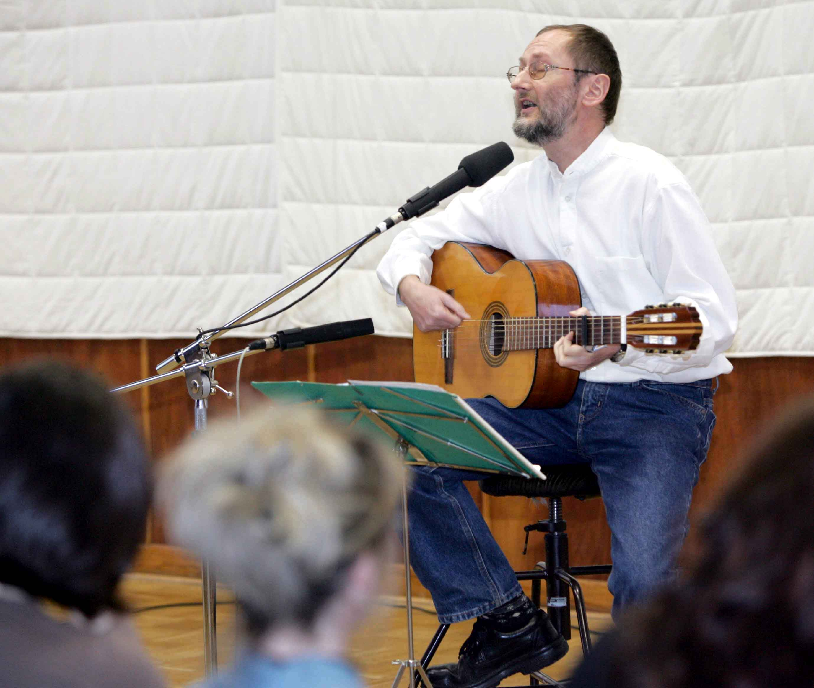

Am 30. März 2007 brachte Holger Uske im Rahmen der Literaturnacht im Suhler Haus „Philharmonie" sein neues Programm „Schattenklang" zur Premiere. Das zehnte Programm des Autors im 20. Auftrittsjahr mit eigenen Liedern vereint in bewährter Weise neue Texte – Prosa diesmal ausschließlich aus dem im Dezember 2006 im quartus-Verlag Jena erschienenen Band „Dr. Oppermanns Tür" – mit Reminiszenzen an vorangegangene Auftritte. Und er bietet mehr musikalische Beiträge als bisher an.

Holger Uske bei seinem Auftritt zur Programmpremiere im Haus Philharmonie am 30.3.2007. Foto: Michael Bauroth (mit freundlicher Genehmigung des Bildautors)
Am Anfang des neuen Programms stand der Titel. Was wartet unter der Oberfläche der Tage auf uns, vielleicht der Klang des Schattens? Leis wie Schatten kommen manche der Texte des Suhlers und Chefs des Südthüringer Literaturvereins daher, in leisen Tönen angelegt sind auch viele seiner Lieder. Doch gerade die leisen Töne können manchmal tiefer dringen als das Laute, das sich am Oberflächlichen festmacht. Was ist wirklich vergangen? „Nichts ist vergessen", meint er in einem seiner Lieder, noch immer ist er auf der Suche nach „neuen Schuhen für die Welt". Dann geht es noch um den „Stoff, aus dem die Tage sind" und die Angaben auf einem Kalenderblatt werden ihm zur „Geheimschrift in schwarz und rot / die Minute um Minute / erst lesbar wird". Das 70-minütige Programm lädt zum Einstimmen und Einschwingen ein, um den Klang des Schattens kennen zu lernen.
Eva Tödtmann im „Freien Wort" vom 3. April 2007: „Mit seiner seit 20 Jahren bewährten Mischung aus Lesung, Vortrag und Gesang unternimmt er in seinem neuen Programm den Versuch, hinter die gesellschaftlichen Erscheinungen oder auch ganz alltägliche Dinge zu sehen … Dafür erntet er nicht nur Beifall, sondern treibt ein feines Lächeln in die Gesichter seiner Zuhörer."
Texte aus dem Programm
Aus dem Titellied
Schattenklang
Schattenklang auf Sonnenweg
Was wächst von den Bäumen mir zu
Windstimmen wispern am Steg
Geben keine Ruh
Im gleißenden Licht, wenn alle meinen
Zu wissen, was gerade geschieht
Hab ich meine Zweifel. Gibt es nicht einen
Der hinter die Dinge sieht
Schattenklang auf Regenweg
Was wächst von den Freunden mir zu …
Getrieben, fällt uns das Einhalten schwer
Maßlos gegen uns und die Welt
Der Tag, er atmet frei um mich her
Ich bin hineingestellt
Schattenklang auf Sonnenweg
Was wächst aus den Stunden mir zu
Windstimmen wispern am Steg
Geben keine Ruh
Eines der Gedichte im Programm
Abreißkalender
Geheimschrift in schwarz und rot
Die Minute um Minute
Erst lesbar wird
Woran werden wir
Hüfthoch in Blättern stehend
Gemessen
Das Weiß zwischen den Ziffern
Und Buchstaben: das ganze
Unbetretene Land
Jetzt. Die Farbe der Stunde
Schärft das Ohr
Für das leise Lachen des Winds
Aufführungen dieses Programms: in Thüringen